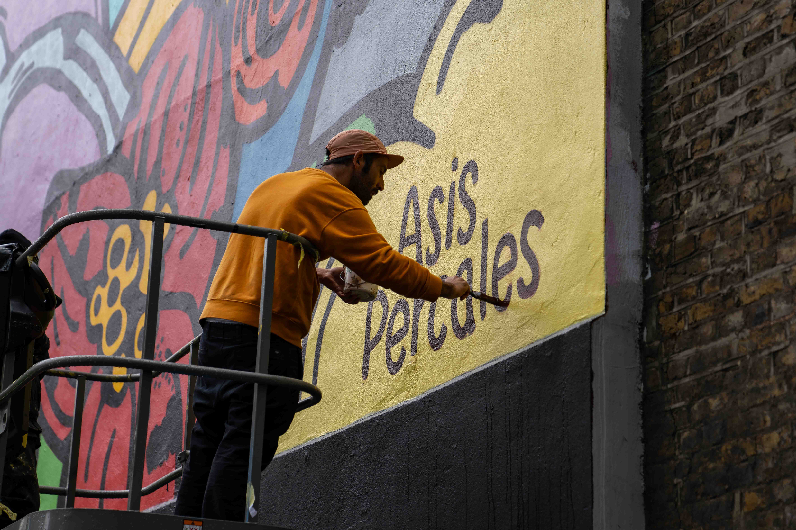
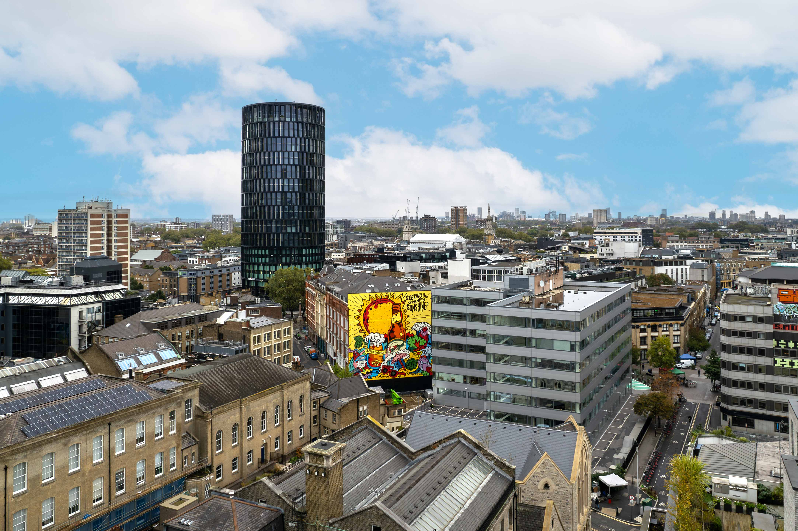
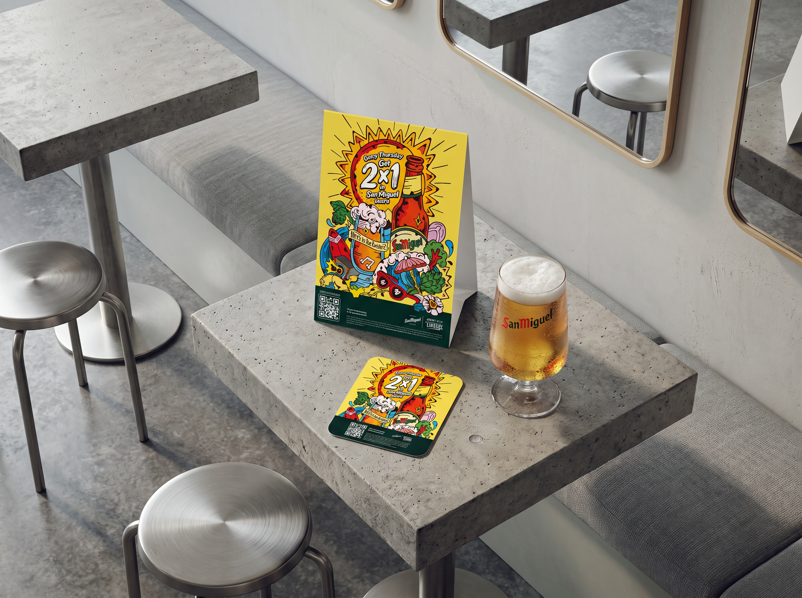
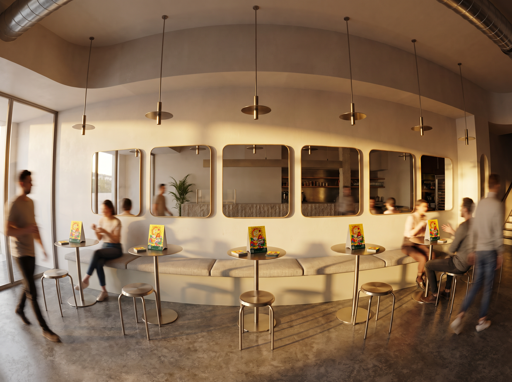

SEEKING
THE SPANISH SUNSHINE
With the clocks changing, the days get shorter, and the time difference leaves England with even less daylight.
To fight the Winter Blues, San Miguel decided to bring the Spanish sunshine to London. How? By lighting up the street with the help of Europe’s largest mural, giving the city an extra hour and a half of sunshine to enjoy as if summer had never ended.
We worked with renowned Spanish artist Asis Percales to create the mural. The experience extended beyond the mural itself. While it was lit, nearby bars joined the activation with special promotions. We also designed the point-of-sale materials that brought the campaign into each venue and connected the on-street activation with the moment of enjoying a San Miguel.

ASIS PERCALES


POS